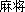
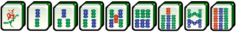
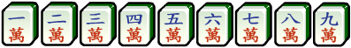
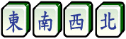
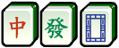
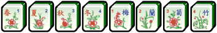
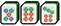
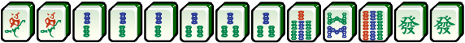
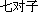

, and .
, and .Mahjong () is a game of Chinese origin usually played by four persons with tiles resembling dominoes and bearing various designs, which are drawn and discarded until one player wins with a hand of four combinations of three tiles each and a pair of matching tiles.
A set of Mahjong tiles will usually differ from place to place. It usually has at least 136 tiles, most commonly 144, although sets originating from America or Japan will have more. The 136-tile Mahjong includes:
Dots: named as each tile consists of a number of circles. Each circle is said to represent copper (tong) coins with a square hole in the middle. In this problem, they're represented by 1T, 2T, 3T, 4T, 5T, 6T, 7T, 8T and 9T.
Bams: named as each tile (except the 1 Bamboo) consists of a number of bamboo sticks. Each stick is said to represent a string (suo) that holds a hundred coins. In this problem, they're represented by 1S, 2S, 3S, 4S, 5S, 6S, 7S, 8S and 9S.

Craks: named as each tile represents ten thousand (wan) coins, or one hundred strings of one hundred coins. In this problem, they're represented by 1W, 2W, 3W, 4W, 5W, 6W, 7W, 8W and 9W.

Wind tiles: East, South, West, and North. In this problem, they're represented by DONG, NAN, XI, BEI.

Dragon tiles: red, green, and white. The term dragon tile is a western convention introduced by Joseph Park Babcock in his 1920 book introducing Mahjong to America. Originally, these tiles are said to have something to do with the Chinese Imperial Examination. The red tile means you pass the examination and thus will be appointed a government official. The green tile means, consequently you will become financially well off. The white tile (a clean board) means since you are now doing well you should act like a good, incorrupt official. In this problem, they're represented by ZHONG, FA, BAI.

There are 9*3+4+3=34 kinds, with exactly 4 tiles of each kind, so there are 136 tiles in total.
To who may be interested, the 144-tile Mahjong also includes:
Flower tiles:
typically optional components to a set of mahjong tiles, often contain artwork on their tiles. There are exactly one tile of each kind, so 136+8=144 tiles in total. In this problem, we don¡¯t consider these tiles.
Chinese Mahjong is very complicated. However, we only need to know very few of the rules in order to solve this problem. A meld is a certain set of tiles in one's hand. There are three kinds of melds you need to know (to who knows Mahjong already, kong is not considered):
Pong: A set of three identical titles. Example: ;.
Chow: A set of three suited tiles in sequence. All three tiles must be of the same suites. Sequences of higher length are not permissible (unless it forms more than one meld). Obviously, wind tiles and dragon tiles can never be involved in chows. Example:;.
Eye: The pair, while not a meld, is the final component to the standard hand. It consists of any two identical tiles.
A player wins the round by creating a standard mahjong hand. That means, the hand consists of an eye and several (possible zero) pongs and chows. Note that each title can be involved in exactly one eye/pong/chow.
When a hand is one tile short of wining, the hand is said to be a ready hand, or more figuratively, 'on the pot'. The player holding a ready hand is said to be waiting for certain tiles. For example

is waiting for , and .
To who knows more about Mahjong: don't consider special winning hands such as ''.
1S 1S 2S 2S 2S 3S 3S 3S 7S 8S 9S FA FA 1S 2S 3S 4S 5S 6S 7S 8S 9S 1T 3T 5T 7T 0
Case 1: 1S 4S FA Case 2: Not ready